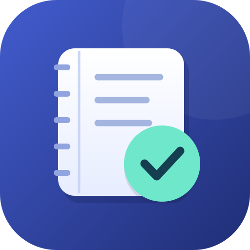

내 PC에서 바로 시작
압축을 풀고 실행하세요.
Node.js 설치 없이 포함된 런타임을 사용합니다.
- 전체 압축파일 풀기
Windows용 DailyNote 압축파일을 원하는 폴더에 풀어 주세요. runtime 폴더도 함께 있어야 합니다.
- 서버 실행
Start_DailyNote.bat를 실행하세요. 처음에는 관리자 아이디와 비밀번호를 정하고, 다음부터는 서버와 브라우저가 바로 열립니다.
- 바탕화면 바로가기 만들기
같은 폴더의 Create_DailyNote_Shortcut.bat를 실행하세요. 바탕화면의 DailyNote 아이콘으로 서버를 시작할 수 있습니다.
다운로드한 BAT는 압축을 푼 폴더에 넣고 실행하세요. 브라우저가 PC 파일을 자동 실행하지는 않습니다.
사용 안내
서버 창은 사용 중 열어 두고, 종료할 때 Ctrl+C를 누르세요. 다시 누르면 이미 실행 중인 서버를 엽니다.
업무 자료는 data, 첨부 파일은 uploads에 보관됩니다. 프로그램 업데이트 때 두 폴더를 보존하세요. 폴더를 이동했다면 바로가기를 다시 만드세요.
이 구성은 내 PC에서 사용하며 Windows 10/11 64비트용입니다. 설치용 EXE·MSI는 없고, 포터블 실행 파일 runtime/node.exe가 포함됩니다.